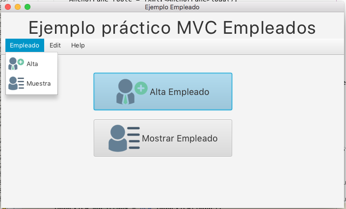
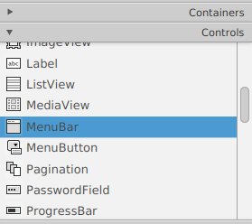
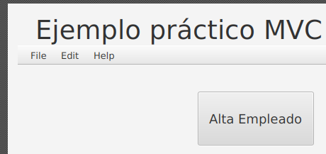
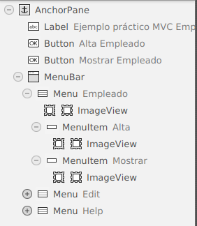
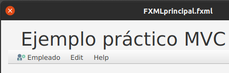
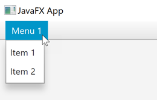
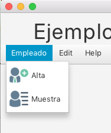
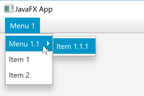

La barra de menú JavaFX (MenuBar) proporciona a las aplicaciones JavaFX un menú desplegable visual similar al que tienen la mayoría de las aplicaciones de escritorio en la parte superior de la ventana de la aplicación. La barra de menús de JavaFX está representada por la clase javafx.scene.control.MenuBar.

Creación de una instancia de MenuBar
Antes de poder utilizar la barra de menús de JavaFX, se debe crear una instancia de la barra de menús.
MenuBar menuBar = new MenuBar();Podemos arrastrar el control MenuBar hasta nuestro escenario, no está en la pestaña Menu (como podríamos pensar) es un Control.

Una vez tenemos el control en nuestra vista podemos dar su dimensión.

Añadir una barra de menú al gráfico de escena
Antes de que una barra de menú se vuelva visible, se deberá añadir al gráfico de escena JavaFX.
import javafx.application.Application;
import javafx.scene.Scene;
import javafx.scene.control.Menu;
import javafx.scene.control.MenuBar;
import javafx.scene.control.MenuItem;
import javafx.scene.layout.VBox;
import javafx.stage.Stage;
public class JavaFXApp extends Application {
public static void main(String[] args) {
launch(args);
}
@Override
public void start(Stage primaryStage) {
primaryStage.setTitle("JavaFX App");
MenuBar menuBar = new MenuBar();
VBox vBox = new VBox(menuBar);
Scene scene = new Scene(vBox, 960, 600);
primaryStage.setScene(scene);
primaryStage.show();
}
}NOTA: se añade el MenuBar al diseño raíz (VBox) de la escena JavaFX. Esto coloca la barra de menú en la parte superior de la ventana de la aplicación.
IMPORTANTE: en el ejemplo anterior no hemos añadido ningún menú o elemento de menú a la barra de menús, por lo que si ejecutamos el ejemplo, en realidad no se verá la barra de menús.
Creación de instancias de menú
Una vez que se ha creado la instancia de MenuBar, podemos añadir instancias de Menu (javafx.scene.control.Menu) .
Una instancia de Menu representa un único menú vertical con elementos de menú anidados.
Menu menu1 = new Menu("Menu 1");
MenuBar menuBar = new MenuBar();
menuBar.getMenus().add(menu1);Por defecto, si lo hemos añadido desde SceneBuilder tendremos tres instancias de menú (File, Edit y Help), podemos modificarlas, quitarlas o añadir más.
Gráficos de menú
Podemos establecer un ícono gráfico para un Menú llamando a su método setGraphic(). El icono gráfico se mostrará junto a la etiqueta de texto del menú. Aquí hay un ejemplo de configuración de un icono gráfico para una instancia de menú JavaFX:
Image image = new Image(getClass().getResource("alta32.png").toString());
ImageView imageView32 = new ImageView(image);
mAlta.setGraphic(imageView32);Esta opción no la tendremos como atributo de la instancia de Menu, por lo que si queremos poner iconos a nuestras opciones de menú debemos:
- crear una carpeta en nuestro proyecto para organizar nuestras imágenes, si no son muy grandes mucho mejor.
- Arrastrar un control ImageView sobre el control al que queremos añadir el icono.

- Modificaremos el tamaño del icono para que sea del tamaño deseado. Esto lo haremos desde la pestaña layoud del control ImageView, tributos Fit width y Fit Heigth.

Eventos de menú
Una instancia de Menu JavaFX puede activar varios eventos que puede escuchar en su aplicación. Los eventos más utilizados son:
- onShowing (mostrando)
- onShow (mostrado)
- nonHiding (ocultando)
- onHidden (ocultado)
Cuando se hace clic en un menú con el ratón, se muestra su contenido. Esta acción activa el evento onShowing antes de que el menú comience a mostrar sus elementos de menú. Una vez que el menú está completamente visible, se activa el evento onShown.
Cuando se hace clic con el ratón en un menú mostrado (abierto), se oculta su contenido nuevamente. Esta acción activa el evento onHiding antes de que el menú comience a ocultar sus elementos de menú. Una vez que el menú está completamente oculto, se activa el evento onHidden.
Podemos configurar detectores de eventos de menú para los eventos anteriores mediante los métodos setOnShowing(), setOnShown(), setOnHiding() y setOnHidden(). Por ejemplo:
Menu menu = new Menu("Menu 1");
menu.setOnShowing(e -> { System.out.println("Showing Menu 1"); });
menu.setOnShown (e -> { System.out.println("Shown Menu 1"); });
menu.setOnHiding (e -> { System.out.println("Hiding Menu 1"); });
menu.setOnHidden (e -> { System.out.println("Hidden Menu 1"); });Los detectores de eventos del menú establecidos anteriormente solo imprimen un mensaje en la consola cuando se activan los eventos. Podríamos hacer algo más avanzado en caso de que lo necesitemos.
Añadir MenuItem
Una vez que hayamos creado una instancia de Menu, debemos añadir una o más instancias de MenuItem. Cada MenuItem corresponde a un elemento de menú en el menú al que se agrega.
Menu menu = new Menu("Menu 1");
MenuItem menuItem1 = new MenuItem("Item 1");
MenuItem menuItem2 = new MenuItem("Item 2");
menu.getItems().add(menuItem1);
menu.getItems().add(menuItem2);
MenuBar menuBar = new MenuBar();
menuBar.getMenus().add(menu);Así es como se vería la barra de menú JavaFX resultante, si se usara en una aplicación JavaFX:

Gráficos de MenuItem
Podemos añadir un icono a un elemento del menú. Se añade un ícono gráfico a un MenuItem llamando a su método setGraphic(), pasando como parámetro el gráfico que se desea usar para el MenuItem dado.
Image image = new Image(getClass().getResource("alta32.png").toString());
ImageView imageView32 = new ImageView(image);
image = new Image(getClass().getResource("muestra32.png").toString());
ImageView muestra32 = new ImageView(image);
mAlta.setGraphic(imageView32);
mMuestra.setGraphic(muestra32);Esta opción no la tendremos como atributo de la instancia de MenuItem, por lo que si queremos poner iconos a nuestras opciones de menuItem debemos:
- crear una carpeta en nuestro proyecto para organizar nuestras imágenes, si no son muy grandes mucho mejor.
- Arrastrar un control ImageView sobre el control al que queremos añadir el icono.
- Modificaremos el tamaño del icono para que sea del tamaño deseado. Esto lo haremos desde la pestaña layoud del control ImageView, tributos Fit width y Fit Heigth.
Así es como se ve una barra de menú JavaFX con iconos gráficos añadidos a sus elementos de menú:

Eventos de MenuItem
Las configuraciones de MenuBar creadas en los ejemplos anteriores no reaccionan si selecciona cualquiera de los elementos del menú. Para responder a la selección de un MenuItem, se debe configurar un detector de eventos en el MenuItem.
MenuItem menuItem1 = new MenuItem("Item 1");
menuItem1.setOnAction(e -> {
System.out.println("Menu Item 1 Selected");
});Observe que Java Lambda se agregó como parámetro al método setOnAction() de MenuItem . Esta expresión lambda se ejecuta cuando se selecciona el elemento del menú.
De la misma forma, podemos escribir un método, y asociarlo al evento desde Scene Builder, utilizando el desplegable de la sección Code una vez seleccionado el MenuItem.
Submenús
La barra de menús de JavaFX admite varias capas de menús. Un menú anidado dentro de otro menú se denomina submenú. La clase Menu hereda la clase MenuItem y, por lo tanto, puede usarse como un elemento de menú dentro de otra instancia de Menú. Por ejemplo:
Menu menu = new Menu("Menu 1");
Menu subMenu = new Menu("Menu 1.1");
MenuItem menuItem11 = new MenuItem("Item 1.1.1");
subMenu.getItems().add(menuItem11);
menu.getItems().add(subMenu);
MenuItem menuItem1 = new MenuItem("Item 1");
menu.getItems().add(menuItem1);
MenuItem menuItem2 = new MenuItem("Item 2");
menu.getItems().add(menuItem2);
MenuBar menuBar = new MenuBar();
menuBar.getMenus().add(menu);La barra de menú de JavaFX resultante del ejemplo anterior se verá similar a esto:
